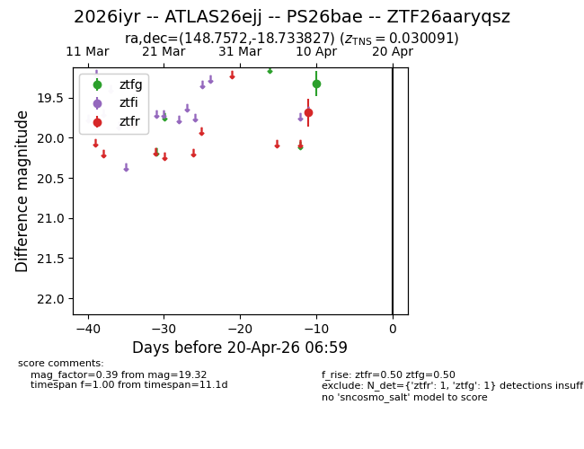
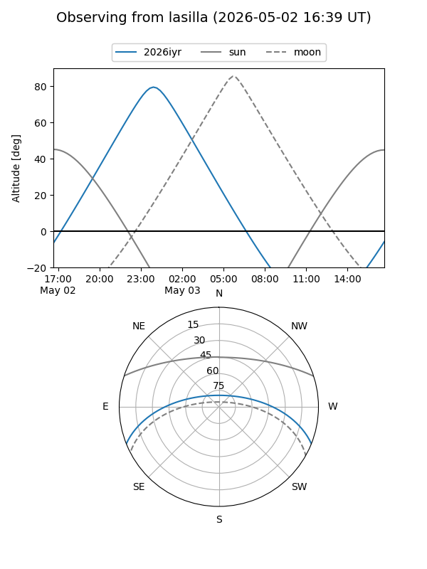
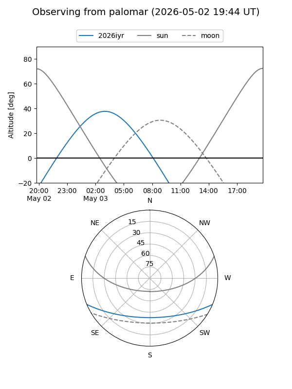
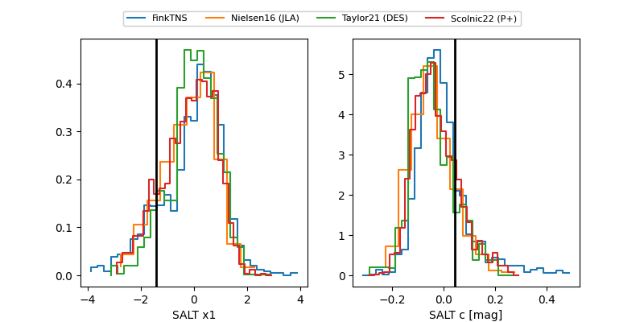

2026iyr
Target 2026iyr at 2026-04-20 07:10
Aliases and brokers:
FINK: link
Lasair: link
ALeRCE: link
TNS: link
YSE: link
alt names
ZTF26aaryqsz (ztf,fink_ztf)
2026iyr (tns,yse)
PS26bae (panstarrs)
ATLAS26ejj (atlas)
Coordinates:
equatorial (ra, dec) = 148.7572,-18.73383
equatorial (HMS+DMS) = 09:55:01.72,-18:44:01.78
galactic (l, b) = (255.0519,+27.30910)
Flags:
confirmed ia
Photometry:
last ztfg=19.32, ztfr=19.69
1 ztfg, 1 ztfr detections
Lightcurve

Visibility


Additional plots
